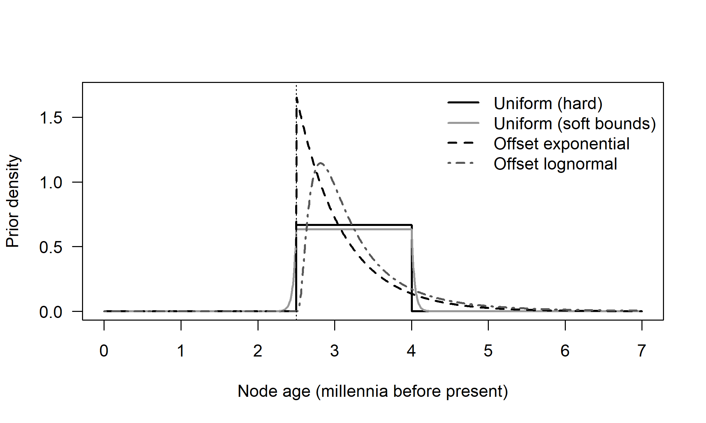
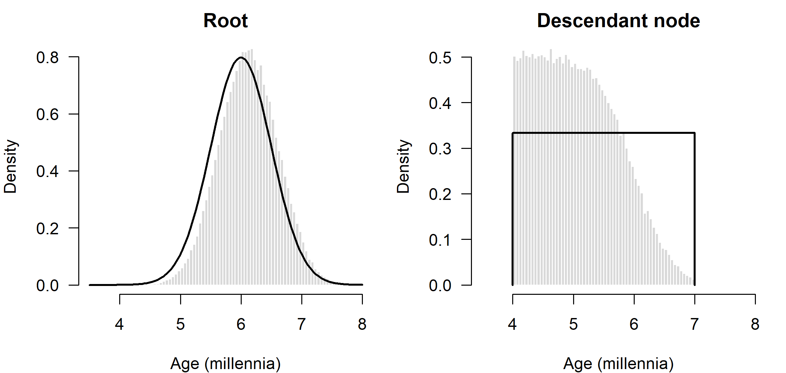
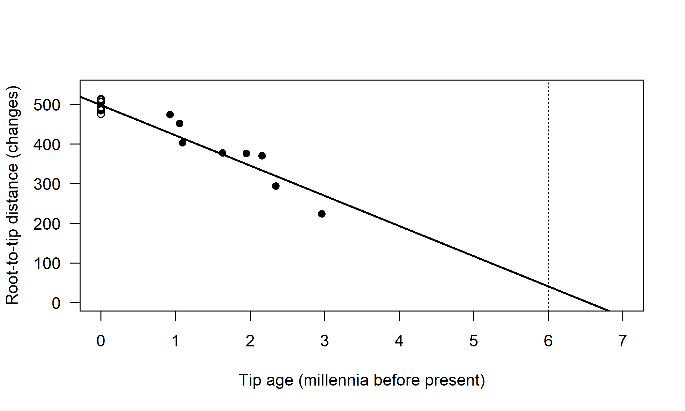
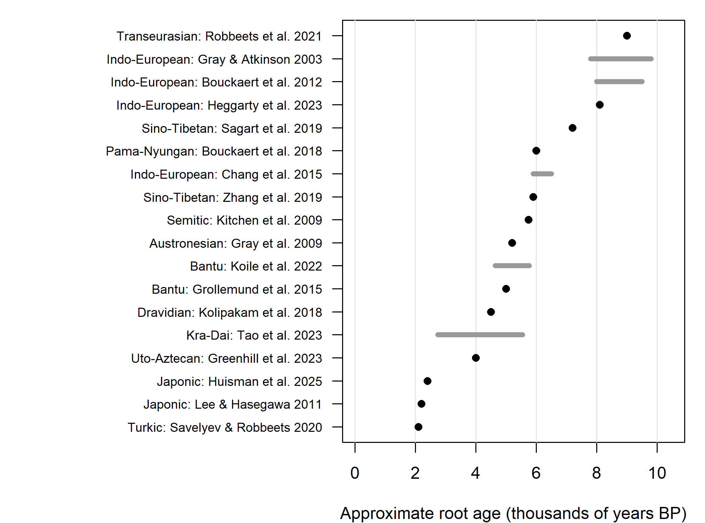

Chapter 10 Calibration and Divergence Times: Family by Family
Chapter 9 showed that a clock model can turn a tree measured in amounts of change into a tree measured in relative time, but that the data alone never fix the absolute scale. This chapter is about the last step, anchoring relative time to the calendar, and about what that step has produced. Calibration is where historical linguistics, philology and archaeology enter a dating analysis most directly, and it is also where most disputes about published dates turn out to lie: which events can be dated, how securely, which node of the tree they belong to, and whether an attested ancient language is an ancestor, a sister or merely a witness. The first half of the chapter develops the theory of calibration and of validating dates; the second reviews the published dated phylogenies of the world’s language families. Chapter 15 takes up the broader controversies, and Chapter 11 the closely related question of where families originated.
After reading this chapter you should be able to:
- explain, using the infinite-sites argument, why calibrations determine the precision of every date in a tree and not only its time scale;
- choose and justify a calibration density for a piece of historical evidence, and explain why minimum ages are usually more secure than maximum ages;
- distinguish specified from effective priors on node ages, and diagnose the difference by sampling from the prior;
- describe the ways an attested ancient language can enter a dating analysis (node calibration, dated tip, sampled ancestor, constrained ancestor), and explain how the choice affects taxon selection, coding and dates;
- assess whether a published date has been independently validated, distinguishing evidence used as calibration from evidence held out, and recognizing circular agreement;
- summarize the published dated phylogenies of the major families and identify for each the main source of disagreement.
10.1 The anatomy of a dating analysis
A Bayesian dating analysis has five components, and every published date is the product of all of them:
- Data \(D\): usually a matrix of cognate sets coded as binary characters, sometimes multistate meaning-classes or structural features (Chapter 3).
- A substitution model describing how characters change: for example a binary CTMC with gamma rate variation or a stochastic Dollo model (Chapter 7).
- A clock model describing how rates vary across branches: strict, relaxed or local (Chapter 9).
- A tree prior describing the distribution of topologies and node ages before the data are seen: Yule, birth-death, coalescent or fossilized birth-death (Chapter 6).
- Calibrations linking some node ages, or tip ages, to absolute time.
Components 2 to 4 form what Warnock and Wright (2020) call the tripartite model of Bayesian divergence-time estimation, the substitution, clock and tree models, each of which can be specified and checked separately; their short introduction, written for paleobiologists, is a useful companion to this chapter.
The joint posterior is \[\begin{equation} p(\tau, \mathbf{t}, \mathbf{r}, \theta \mid D) \propto P(D \mid \tau, \mathbf{t}, \mathbf{r}, \theta)\; p(\mathbf{r} \mid \theta)\; p(\tau, \mathbf{t} \mid \theta, \mathcal{C})\; p(\theta), \tag{10.1} \end{equation}\] where \(\mathbf{t}\) are node ages, \(\mathbf{r}\) branch rates, \(\theta\) the remaining parameters, and \(\mathcal{C}\) the calibrations. The data enter only through the likelihood, which, as Chapter 9 emphasized, depends on rates and times only through their products. Everything that separates rate from time comes from the clock prior \(p(\mathbf{r} \mid \theta)\) and the time prior \(p(\tau, \mathbf{t} \mid \theta, \mathcal{C})\).
A simple thought experiment shows how much this matters. Suppose we had an unlimited number of cognate sets, so that every branch length \(b_j = r_j t_j\) was known exactly. Under a strict clock, the node ages would then be known up to a single scale factor, the rate. All the remaining uncertainty would come from the calibrations: if the calibration on the root allowed ages between 5,000 and 7,000 years, then every node age would have a correspondingly proportional range. Adding more data would not narrow the interval at all. This infinite-sites argument, developed by Yang and Rannala (2006) and Rannala and Yang (2007), shows that in dating, unlike in topology estimation, uncertainty does not vanish as data accumulate. With a relaxed clock, the limit is wider still, because each branch has its own rate. Plotting the width of posterior intervals against their mean for all nodes in a tree (an infinite-sites plot) reveals how close an analysis is to this limit. If the points fall on a straight line, more data will not help, and only better calibrations can (Reis et al. 2016).
The derivation of the infinite-sites limit for a strict clock, with a short R illustration of the infinite-sites plot, is in Section C.4.1.
Linguistic datasets are very far from infinite. A typical basic vocabulary list has 100 to 200 meanings, yielding a few hundred to a few thousand cognate sets, many of which are present in only a few languages. In practice, therefore, both data and calibrations limit precision. Yet the infinite-sites argument contains a lesson that is easily forgotten. Calibrations do not just fix the time scale; they determine the precision of every date in the tree, and errors in them propagate to every node.
10.1.1 What is identified, and by what
Section 9.1.1 classified the quantities in a dated tree by whether the lexical data identify them. Table 10.1 extends that classification to the quantities that dating analyses report, using the four questions of Section 6.10: is the quantity identifiable under the model, practically estimable with realistic linguistic data, robust to misspecification, and interpretable as a historical quantity?
| Quantity | Identified by | Practically estimable? | Most sensitive to | Historical interpretation |
|---|---|---|---|---|
| Topology and branch lengths | The characters | Usually, for well-sampled families | Borrowing, coding, saturation | Shared cognates are not shared innovations (Chapter 3); topology is a summary of lexical similarity under the model |
| Relative node ages | Characters plus clock prior | Yes under a strict clock; partly under relaxed clocks | Clock model, among-character rate variation | Order and spacing of lineage splits |
| Absolute node ages | Calibrations (with clock and tree priors) | Only as precisely as the calibrations allow | Calibration placement and densities; effective priors | The time of the “split” depends on what a split of a dialect continuum means |
| Mean clock rate | Calibrations plus characters | Yes, given good calibrations | List composition, coding (binary versus multistate) | A rate of cognate-class gain and loss on a given list, not a universal rate of change |
| Individual branch rates | Clock prior plus characters | Poorly, especially on terminal branches | Missing data, undetected loans | Ambiguous: tempo of change or unmodeled processes |
| Tree-prior parameters (speciation, extinction, sampling) | Node-age distribution | Weakly; often prior-dominated | Taxon sampling scheme | Rarely interpretable as rates of language diversification |
| Ancestor or sister status of an ancient language | Absence of unique changes in the ancient language | Poorly when the language is fragmentarily attested | Missing data, literary registers | Whether the attested variety, or a close relative, gave rise to the descendants |
Two lessons follow from the table. First, the quantities that attract the most attention, absolute root ages, are precisely those that the lexical data do not identify: they are borrowed from the calibrations through the clock model. A root age is therefore only as good as the weakest of three things: the calibrations, the match between clock model and real rate variation, and the extrapolation from calibrated nodes to the root. Second, the quantities that the data identify best, topology and branch lengths, are summaries of lexical similarity under the substitution model. Agreement between an inferred topology and the subgroups of the comparative method is welcome, but it is not independent validation of either (Section 1.9.1), and it says nothing at all about whether the dates are right.
10.2 Kinds of calibration information
Biologists calibrate trees primarily with fossils, whose ages are determined by radiometric dating of the rocks in which they are found. Linguists have no direct equivalent of radiometric dating for languages. Instead, they use several indirect sources of absolute time, each with characteristic strengths and weaknesses. Table 10.2 summarizes them.
| Source | Example | What it constrains | Main risks |
|---|---|---|---|
| Documented historical events | Settlement of Iceland in the late ninth century CE; Dutch colonization of the Cape from the mid-seventeenth century | Upper (and sometimes lower) bound on the split of a colonial variety from its source | Dialect differentiation may predate or postdate the migration; continued contact |
| Written attestation of an ancient language | Hittite texts from the second millennium BCE; the fourth-century Gothic Bible | A minimum age for the clade containing that language; or a dated tip | Attestation is not origin; literary languages may not be ancestral to spoken descendants |
| Disappearance of a common language | Latin as the last common stage before the Romance split | Age of a clade’s last common ancestor | When exactly a dialect continuum became separate languages is a matter of definition |
| Archaeological correlates | Lapita-associated settlement of western Polynesia; first settlement of New Zealand | Ages of clades assumed to correspond to an archaeological expansion | Circularity if the dated tree is then used to test the archaeological hypothesis; language and material culture need not move together |
| Datable loanword strata | Latin loans in Germanic; Chinese loans in neighboring languages | Relative order of events and contact dates | Indirect; often constrain contact rather than splits |
Three general points apply. First, a calibration is a statement about a node in the tree: the last common ancestor of a specified set of languages. Its validity depends on the clade being correctly identified. If a calibration is attached to the most recent common ancestor of the Romance languages, but the tree places a non-Romance language within that clade, the calibration constrains the wrong event. In BEAST and similar programs, calibrated clades are often constrained to be monophyletic for exactly this reason.
Second, most historical evidence provides minimum ages more securely than maximum ages. A written text proves that a language existed and was already distinct by the time it was written. It says nothing about how long before that the language had been separating from its relatives. Maximum ages are typically inferred from negative evidence, such as the absence of a population from a region before a certain date, which is weaker. The asymmetry is the same as with fossils, and it shapes the choice of calibration distribution (Section 10.3).
Third, the split between two languages is not an instantaneous event. Dialects diverge gradually, and the date at which two varieties became “separate languages” depends on contact, mutual intelligibility and social identity. A tree model treats a split as a point in time. The calibration therefore represents a modeling idealization, and its uncertainty should be wide enough to reflect that.
10.3 Node calibrations and their densities
10.3.1 Calibration distributions
In a Bayesian analysis, a calibration is a probability density on the age of a node. Several standard forms are used (Ho and Phillips 2009):
- A uniform density between a minimum \(a\) and a maximum \(b\), with zero probability outside. This is a hard-bounded calibration. It says that all ages in the interval are equally plausible and all ages outside it are impossible.
- A soft-bounded uniform, in which most of the probability lies between \(a\) and \(b\) but small tails, often 2.5 percent on each side, extend beyond them (Yang and Rannala 2006). Soft bounds allow the data to override a calibration that conflicts with the rest of the evidence, which hard bounds do not.
- An offset lognormal or offset exponential, in which the minimum age \(a\) is treated as a hard lower bound and the time by which the true age exceeds it has a lognormal or exponential distribution. These forms express the idea that the true age is probably not much older than the minimum but could be considerably older. Their parameters are best chosen by deciding where the bulk of the probability should lie, for example by placing the 97.5 percent quantile at the oldest plausible age, rather than by guessing the parameters directly.
- A normal density centered on a best estimate, appropriate when an event is believed to be dated to within a symmetric range, as with some historical events. Normal calibrations were common in early linguistic BEAST analyses.
Figure 10.1 compares these shapes for a hypothetical node whose minimum age, from the earliest written attestation of one of its descendants, is 2,500 years.
The offset-lognormal density (Equation (C.12)), the construction of soft bounds, functions that choose the parameters of offset lognormal and exponential calibrations from a minimum and an upper quantile, and the code for Figure 10.1 are in Section C.4.2.

Figure 10.1: Four calibration densities for a node with a minimum age of 2.5 millennia (dotted line): a hard-bounded uniform (2.5 to 4 millennia), a soft-bounded uniform with exponential tails, an offset exponential and an offset lognormal. All have similar central ranges but very different assumptions about how old the node could be.
Which shape is right? There is no general answer. Biologists have argued for years about how to translate paleontological knowledge into calibration densities, and have developed best-practice guidelines for justifying them (Parham et al. 2012). The same discipline would benefit linguistics. For each calibration, a study should state the clade it applies to, the evidence for its minimum and maximum, the reason for the chosen distribution and its parameters, and a reference to the historical or archaeological source. Most published linguistic analyses provide the first two; fewer justify the shape of the density. The choice matters most for the tail on the old side, because that is where the evidence is weakest and where an offset exponential and an offset lognormal with the same median can differ by centuries.
10.3.2 How calibrations interact
A calibration density is what the analyst specifies. It is not necessarily what the analysis uses. The prior on node ages actually applied in an analysis, the effective prior or marginal prior, can differ substantially from the specified calibration densities, for three reasons.
Truncation by ordering. A node cannot be older than its parent. If two calibrated nodes are nested and their calibration densities overlap, the joint prior is truncated to the region where the ancestor is older than the descendant. Both marginal distributions shift: the ancestor toward older ages, the descendant toward younger ones.
Interaction with the tree prior. In BEAST, the joint prior on node ages is typically constructed by multiplying the tree prior density by the calibration densities. This product is not, in general, a distribution whose marginals equal the calibration densities. The tree prior pulls node ages in its own direction, and uncalibrated nodes are also affected. Heled and Drummond (2012) derived calibrated tree priors whose marginals do match the specified calibrations for the Yule process, and explained the difference between the multiplicative and conditional constructions. Yang and Rannala (2006) use a conditional construction in MCMCTree, in which the calibrations define the marginal densities of calibrated nodes and the birth-death process defines the distribution of the others conditional on them.
Interaction with the clock prior. The prior on rates also contributes. Even the prior on the mean clock rate, combined with the root calibration and the tree prior, implies a prior on the total amount of change expected in the tree.
Inoue et al. (2010) and Warnock et al. (2012) demonstrated with molecular examples that effective priors can differ greatly from specified ones and that the differences can drive posterior dates. The diagnostic is simple. Run the analysis without data, sampling from the prior alone, and compare the resulting marginal prior distributions of calibrated and uncalibrated node ages with what was intended. BEAST 2 and RevBayes both make this easy. A prior-only run is also the first step of implementation validation in the sense of Section 6.10: if the software’s prior does not match the analyst’s understanding of it, nothing downstream can be trusted.
The following simulation illustrates truncation. A root has a normal calibration with mean 6 and standard deviation 0.5 millennia, and a descendant node has a uniform calibration between 4 and 7 millennia. Sampling from the product of the two densities and imposing the order constraint, by rejection, gives the effective joint prior.
set.seed(3)
m <- 2e5
root <- rnorm(m, 6, 0.5)
desc <- runif(m, 4, 7)
ok <- desc < root # ordering constraint
op <- par(mfrow = c(1, 2), mar = c(4, 4, 2, 1))
hist(root[ok], breaks = 60, freq = FALSE, col = "grey85", border = "white",
main = "Root", xlab = "Age (millennia)", xlim = c(3.5, 8), las = 1)
curve(dnorm(x, 6, 0.5), add = TRUE, lwd = 2)
hist(desc[ok], breaks = 60, freq = FALSE, col = "grey85", border = "white",
main = "Descendant node", xlab = "Age (millennia)", xlim = c(3.5, 8),
las = 1)
segments(4, 1/3, 7, 1/3, lwd = 2); segments(c(4, 7), 0, c(4, 7), 1/3, lwd = 2)
Figure 10.2: Effective versus specified priors. Histograms show the effective marginal priors on the root (left) and a calibrated descendant node (right) after the two calibrations are combined and the ordering constraint (descendant younger than root) is imposed. Lines show the densities the analyst specified.
par(op)
round(c(mean_root_specified = 6, mean_root_effective = mean(root[ok]),
mean_desc_specified = 5.5, mean_desc_effective = mean(desc[ok])), 2)#> mean_root_specified mean_root_effective mean_desc_specified
#> 6.00 6.12 5.50
#> mean_desc_effective
#> 5.06The root’s effective prior is shifted older than specified, and the descendant’s is no longer uniform: ages near 7 millennia have become improbable, because they would usually exceed the root. With more calibrations and a tree prior, such interactions multiply. None of this is a flaw in the software. It is a consequence of the logic of probability, and the analyst’s task is to check that the effective prior expresses what she believes.
The exact effective densities for this example, obtained by integration and used to check the rejection sampler, and the general form of the multiplicative and conditional constructions, are in Section C.4.3.
Always sample from the prior. A posterior date that sits close to the effective prior tells you that the data are uninformative about that node and the answer was determined by the assumptions. A posterior that sits close to a specified calibration may still be strongly shaped by the tree prior or by other calibrations. Report effective priors alongside posteriors for the key nodes, especially the root. Reviewers of linguistic dating studies should ask for this, as reviewers in molecular dating now routinely do (Brown and Smith 2018).
10.4 The tree prior
The tree prior specifies the distribution of node ages before the data are seen. Three classes are common (Chapter 6). A Yule or pure-birth process assumes that lineages split at a constant rate \(\lambda\) and never go extinct. A birth-death process adds an extinction rate \(\mu\) and a sampling proportion \(\rho\), the fraction of extant languages included. A coalescent prior, derived from population genetics, is designed for samples from a single population and is rarely appropriate for language families, although it has occasionally been used.
The tree prior matters most for the nodes that are far from any calibration and for the root, if the root is not itself calibrated. A Yule prior tends to place nodes relatively evenly in time, whereas a birth-death prior with high extinction concentrates them near the present. A coalescent prior concentrates them near the present even more. Under weak data and few calibrations, the choice can shift root ages noticeably. Rama (2018) compared three tree priors (uniform, fossilized birth-death and coalescent) on five Indo-European datasets and found that the choice shifted the inferred root date by up to about three millennia, and changed the placement of Anatolian and Tocharian near the root, while well-established subgroups were recovered under all three priors. Ritchie and Ho (2019), testing four lexical datasets, found origin-time estimates to be fairly robust to the choice of tree prior, though less so than in comparable analyses of genetic data. They also found that speciation priors fitted better than a constant-size coalescent prior at all the taxonomic scales they examined, but that datasets with narrower taxonomic and geographic sampling fitted the expectations of a birth-death model less well. The sampling proportion \(\rho\) also matters. If a family is represented by a small fraction of its languages, a birth-death prior that assumes complete sampling will place internal nodes in the wrong places. Diversified sampling, in which one language per subgroup is chosen, violates the assumption of random sampling made by most birth-death priors, and biology has developed priors for this case. The parameters of the tree prior are themselves seldom well estimated from a single family (Table 10.1), so it is the choice of prior, not the estimated speciation and extinction rates, that usually matters for dates.
10.5 Tip-dating with ancient languages
10.5.1 Dated tips
Indo-European, Semitic, Sinitic and a few other families include languages known from texts that are centuries or millennia old: Hittite, Tocharian, Latin, Ancient Greek, Vedic Sanskrit, Gothic, Old Irish, Akkadian, Classical Chinese. Such languages can be used in two ways. In node dating, they provide minimum ages for the clades containing them, and they may be excluded from the data matrix entirely. In tip dating, they are included in the data matrix as tips whose ages are fixed, or given a prior distribution, at the dates of their attestation. Because the date of a text is itself often uncertain by decades or centuries, the second option is the safer one: in paleontology, fixing uncertain fossil ages at point values has been shown to bias estimates of divergence times and topology (Barido-Sottani et al. 2019, 2020). Their lexical data then directly inform the rate of change: a language that stopped changing 3,000 years ago should have accumulated fewer changes since the root than a living language. The idea comes from the study of measurably evolving populations in virology (Drummond et al. 2003), where viruses sampled at different times provide a direct measure of the rate.
Tip dating is attractive because the ages of attested languages are among the most secure pieces of chronological information available. They do not require assumptions about when a split happened, only about when a text was written. Its limitations are also clear. Ancient languages are often attested in limited corpora, so many meanings of a basic vocabulary list are missing. They may be literary or archaic registers rather than the spoken vernacular of their time. And they raise the question of whether they are ancestors of later languages, discussed in Section 10.6.
10.5.2 Root-to-tip regression
A quick check of temporal signal in heterochronous data is the root-to-tip regression, popularized in virology by TempEst (Rambaut et al. 2016). If the tree is rooted correctly and the clock is roughly strict, the root-to-tip distance \(d_i\) of tip \(i\) in a phylogram is approximately \[\begin{equation} d_i \approx r\,(T - a_i), \tag{10.2} \end{equation}\] where \(T\) is the root age and \(a_i\) is the age of tip \(i\) (zero for living languages). The slope of the regression of \(d_i\) on \(a_i\) estimates \(-r\), and the point where the line crosses zero distance estimates \(T\). The scatter around the line indicates departure from a strict clock. In virology, this plot is used to detect outliers and to check whether there is enough temporal signal to estimate rates from the tip dates alone. Because the tips share ancestral branches, the usual regression p-values are invalid. A complementary test randomizes the tip ages among tips and checks whether the observed slope is stronger than in the randomized datasets, the date-randomization test (S. Duchêne et al. 2015).
We simulate a family of 24 languages with a root at 6,000 years, of which eight are known only from ancient texts, with lexical change under a mildly relaxed clock (het_phylo, with tip ages tip_age). In the vocabulary of Section 6.10, this is a parameter-recovery exercise: the data follow the nearly clocklike process that the regression assumes, so success here shows only that the method works when its assumptions hold.
The code that simulates the heterochronous family is listed in Section C.4.4, together with the derivation of Equation (10.2).
d <- node.depth.edgelength(het_phylo)[1:n] # root-to-tip distances
fit <- lm(d ~ tip_age)
root_hat <- unname(coef(fit)[1] / -coef(fit)[2]) # where d reaches zero
plot(tip_age, d, pch = ifelse(tip_age > 0, 16, 1), xlim = c(0, 7),
ylim = c(0, max(d) * 1.05), las = 1,
xlab = "Tip age (millennia before present)",
ylab = "Root-to-tip distance (changes)")
abline(fit, lwd = 2); abline(v = 6, lty = 3)
Figure 10.3: Root-to-tip regression for a simulated family of 24 languages, eight of them ancient (filled circles, plotted at their attestation ages). The regression line crosses zero distance near the root age; the dotted line marks the true root age of 6 millennia.
# date-randomization test: permute tip ages among tips
perm_slopes <- replicate(500, coef(lm(d ~ sample(tip_age)))[2])
c(rate_per_kyr = unname(-coef(fit)[2]), root_age = root_hat,
randomization_p = mean(perm_slopes <= coef(fit)[2]))#> rate_per_kyr root_age randomization_p
#> 76.290 6.536 0.000The estimated rate is close to the simulated mean of 80 changes per millennium, the estimated root age is within about half a millennium of the truth (somewhat too old here, partly because of rate variation and the small constant the simulation adds to every branch), and the date-randomization test shows that the temporal signal is far stronger than would be expected by chance. In real linguistic data, root-to-tip plots are rarely shown, but they should be. They reveal ancient languages that are too divergent or not divergent enough for their age, which can indicate coding problems, missing data, misplacement in the tree, or an ancient language that is an ancestor rather than a sister of its relatives.
10.5.3 Missing data in ancient languages
Ancient languages are often poorly attested, and missing data interacts with the model of lexical evolution in subtle ways. If an unattested meaning is treated as absent rather than unknown, the language appears to have lost cognates it may in fact have had, which makes it look more divergent and pushes it away from its relatives. Ryder and Nicholls (2011) developed a stochastic Dollo model that handles missing data explicitly, and applied it to dating Proto-Indo-European, building on Nicholls and Gray (2008). Their analyses showed that careful treatment of missing data matters for root ages. More generally, the way ancient languages are coded, and the way their placement in the tree is treated, became central issues in the debate over Indo-European dates (Section 10.9.1).
10.6 Ancient languages: tips, ancestors or sisters?
10.6.1 What an attested language is
Ancient languages are not simply fossils in the biological sense, and the analogy, useful as it is, hides a problem that historical linguists have long recognized. An attested stage of a language can stand in at least four different relations to the later languages in a dataset:
- it can be (very close to) the direct ancestor of some of them, as Old Norse is of Icelandic;
- it can be a sister lineage with no surviving descendants, as Hittite, Tocharian and Gothic are;
- it can be a close relative of the real ancestor, a different variety of the same speech community. Most Old English texts are in West Saxon, whereas Modern Standard English continues mainly the East Midland dialects of Middle English, which descend from Anglian (Mercian) rather than West Saxon Old English; the Romance languages continue spoken Latin rather than the Classical Latin of the texts; the Middle Indo-Aryan languages are not the descendants of Classical Sanskrit in any simple sense;
- it can be a witness to a dialect network rather than to a single lineage, if its descendants or sisters arose by the diversification of a continuum in which innovations spread across overlapping areas [Garrett (2006); Section 8.7].
Which of these holds is itself an inference, made with the comparative method and philology, and it is often uncertain. It matters for three stages of an analysis. For taxon selection, it determines which ancient varieties to include (a vernacular-like variety is more informative than a literary standard, and two stages of one lineage may be better than one), and whether an ancient language should enter the data matrix at all or only provide a node calibration. For character coding, it determines how to treat register-specific vocabulary, archaisms and gaps in the corpus (Sections 3.2.2 and 10.5.3); a literary word that the spoken language did not use, for instance, creates a spurious unique change. For interpretation, it determines what a date means: if an ancient language sits on a side branch, the split between it and its relatives must be older than its attestation, and a model that cannot place it on the line of descent will push that split, and with it the root, back in time.
10.6.2 The fossilized birth-death process
Paleobiology faced the same problem as linguistics: how to combine dated extinct taxa and living taxa in a single, coherent prior. The answer was the fossilized birth-death (FBD) process (Stadler 2010; Heath et al. 2014). In the FBD model, lineages split at rate \(\lambda\), go extinct at rate \(\mu\), and are sampled as fossils at rate \(\psi\) while alive. Living lineages at the present are sampled with probability \(\rho\). The process defines a prior on trees that includes both the living tips and the dated fossil samples. Because fossils are sampled from lineages that may have continued to evolve, a fossil can be a sampled ancestor: a sample lying directly on a lineage that has living descendants, rather than on a side branch that went extinct. Sampled ancestors appear in the tree as tips with zero-length branches, and specialized MCMC moves are needed to add and remove them (Gavryushkina et al. 2014).
For languages, the analogy is direct but, as the previous section showed, imperfect. An attested ancient language is a “fossil” sampled from a lineage at a known time. Latin is the standard example of a plausible ancestor; Hittite and Tocharian have no living descendants. A standard birth-death prior forces every ancient language to sit at the tip of its own branch, which must be at least slightly longer than zero. If the ancient language is really an ancestor, the model must explain the absence of its unique changes by accumulating a long branch elsewhere, and this can distort the rates and dates. The FBD prior with sampled ancestors allows the ancient language to sit directly on the lineage leading to its descendants, if the data support it.
The FBD process brings two further benefits. It provides a coherent prior on the times of all nodes given the sampled ancient languages, instead of combining ad hoc calibration densities with a tree prior and suffering the interactions described in Section 10.3.2. And it allows total-evidence dating, in which the ancient languages contribute both their dates and their data, as fossils contribute both stratigraphic ages and morphology in paleobiology (Pyron 2011; Ronquist, Klopfstein, et al. 2012; Zhang et al. 2016). Table 10.3 compares the four ways of using an attested language.
| Treatment | What is assumed | What the ancient language’s data contribute | Typical consequence for dates | Main risk |
|---|---|---|---|---|
| Node calibration only | The language belongs to a specified clade, attested by a given date | Nothing; only its date enters, as a minimum age | Depends on the density chosen for the clade age | Treating attestation as origin; wrong clade |
| Dated tip, standard tree prior | The language is a sister lineage that ended at attestation | Its cognates, which inform both topology and rate | If it is really ancestral, splits are pushed older than they should be | Forced side branches; missing data read as change |
| Dated tip, sampled-ancestor (FBD) prior | It may be an ancestor or a sister; the data decide | As above, plus evidence on ancestry | Intermediate; depends on how well ancestry is identified | Ancestry weakly identified with fragmentary data |
| Ancestry constraint | The language is (nearly) the ancestor of specified descendants | As above, with its position fixed | Younger splits if it is in fact a sister | Encodes a philological judgment as a certainty |
10.6.3 Ancestor or sister: what the data can tell
How well can the lexical data distinguish an ancestor from a sister on a short side branch? The evidence for ancestry is negative: an ancestral language should show no lexical changes of its own, no cognate classes gained or lost that its descendants lack. Suppose an ancient language is attested for \(n\) meanings of the list, each replaced at rate \(k\) per millennium, and sits on a side branch of length \(x\) millennia. It is then expected to show about \(n k x\) unique replacements. If none is observed, the data are consistent with any side branch shorter than about \(3/(nk)\) millennia, the familiar “rule of three” for a Poisson count of zero. With a retention of 0.86 per millennium (\(k \approx 0.15\)), a language attested for all 200 meanings excludes side branches longer than about a century, but one attested for 50 meanings excludes only those longer than about four centuries, and one attested for only 20 meanings cannot exclude a side branch of almost a millennium. Conversely, a few apparent unique changes can arise from a literary register, a scribal tradition or a regional variety rather than from a separate line of descent, and the model has no way to tell these apart. In the terms of Section 6.10, ancestry is identifiable under the model but often not practically estimable from fragmentarily attested languages, and the posterior probability that an ancient language is an ancestor is correspondingly sensitive to coding and to the prior on sampled ancestors.
The calculation behind these figures, as a short R function with a table for several list sizes, is in Section C.4.6.
10.6.4 Ancestry constraints and sampled ancestors in linguistics
Chang et al. (2015) argued that much of the disagreement between phylogenetic and traditional estimates of the age of Indo-European arose from the way ancient languages were treated: when languages in their dataset that are widely accepted as ancestral, or very close to ancestral, to particular modern languages (Latin to the Romance languages, Vedic Sanskrit to many modern Indo-Aryan languages) were constrained to be ancestors, the estimated root age fell considerably. Heggarty et al. (2023) later used the sampled-ancestor framework in BEAST 2, which estimates rather than imposes ancestry, on a newly compiled Indo-European dataset. Both studies, and the debate they generated, are discussed in Section 10.9.1. Seen through Table 10.3, the two studies made different choices about how much of the philological judgment to impose and how much to leave to the data, and the previous section shows why the data alone may not settle the question. A dating study with ancient languages should therefore report its root age under more than one of the four treatments, and say which ancient languages it regards as ancestors and on what philological grounds.
Goldstein (2024) examined these issues in a single, well-documented case, the diversification of Latin into the Romance languages. The study addresses three problems that recur in Bayesian dating: sensitivity to the model, the dependence of root-age estimates on uncertain interior-node ages, and the relationship between ancient languages and their modern counterparts. Its results support a gradualist account of the formation of Romance that most likely began after 300 CE, and they are consistent with treating Classical Latin as a sampled ancestor of the Romance languages, that is, as lying on the branch that leads to them. Because the history of Romance is unusually well known, analyses of this kind are among the few places where a dating method’s behavior can be compared with independent historical evidence.
Several developments of the FBD framework in paleobiology have not, to our knowledge, been used with language data. Skyline versions of the birth-death and FBD processes let the rates of splitting, extinction and sampling change through time in piecewise-constant intervals (Stadler et al. 2013). For languages, a time-varying sampling rate is especially relevant: the probability that a language is attested in writing was essentially zero before the invention of writing and has increased since. A model with constant sampling through time misrepresents this. Stratigraphic range models treat a taxon known over an interval of time, rather than at a single date, as a single lineage observed repeatedly. Languages attested over several centuries in a sequence of texts, such as Latin, Greek or Chinese, are natural candidates. Total-evidence dating with morphological clocks (Zhang et al. 2016; Gavryushkina et al. 2017) combines data partitions with different clock models, which is directly relevant for analyses that combine lexical and structural data for ancient and modern languages (Chapter 9). Finally, calibration cross-validation, in which each calibration in turn is left out and its node age predicted from the others, can detect inconsistent calibrations (Near et al. 2005); Section 10.8 shows how simple it is to apply.
10.7 Calibration pitfalls
Many disputes over linguistic dates turn out, on close inspection, to be disputes over calibrations. The following problems recur.
Circularity. If a calibration is derived from an archaeological hypothesis, the dated tree cannot then be used to test that hypothesis. Using the date of Lapita pottery to calibrate the age of Oceanic, and then claiming that the dated tree supports a Lapita-associated spread of Oceanic languages, would be circular. Careful studies avoid this by using historical calibrations unrelated to the hypothesis under test, or by checking that the result is robust when the relevant calibrations are removed.
Attestation is not origin. The date of the earliest text in a language is a minimum age for the clade that contains it, not an estimate of the clade’s age. Treating it as the age of the split, for example with a narrow normal distribution centered on it, biases dates downward.
Wrong clade. A calibration must be attached to the correct node. If historical evidence dates the separation of two dialect groups but the calibration is applied to the most recent common ancestor of a larger clade, or the clade is not monophyletic in the tree, the calibration constrains the wrong event. The miscalibration scenario in the R example below shows the consequences.
Overconfident calibrations. Narrow calibration densities express certainty that the evidence rarely supports. Because calibrations determine the precision of all dates (Section 10.1), overconfident calibrations yield overconfident dates throughout the tree.
Unintended interactions. As shown in Section 10.3.2, several calibrations together, combined with a tree prior, can produce an effective prior that nobody intended.
Extrapolation. If all calibrations are shallow, for example within the last two millennia, the root age is estimated by extrapolating the clock model far beyond the range of the calibrations. Any misspecification of the clock, for instance the time-dependence of rates discussed in Section 9.5.7, then affects the root most strongly.
Undetected borrowing and parallel change. Borrowing between sister languages makes them appear more similar and the nodes that join them younger (Section 8.3). Chang et al. (2015) used the term advergence for the process by which closely related languages accumulate the same innovations after their split, whether through parallel drift from shared precursor words or through continued contact (Section 7.7.5). Parallel gains soon after a split look like a single gain before it, so advergence makes splits look younger and can bias dates downward. Undetected borrowing from outside the family can have the opposite effect, making a language appear more divergent.
Model misspecification beyond the clock. The substitution model, the treatment of ascertainment bias and the model of rate variation among characters all affect branch lengths and therefore dates. Chapter 7 discusses these; Chapter 15 gathers the evidence on how much they matter in practice.
The following example explores some of these pitfalls with ape’s chronos() on a simulated family of 20 languages (cal_phylo, a phylogram with lognormally varying rates) with a true root age of 6,000 years. We date the same phylogram under six calibration schemes, including one in which a calibration has been attached to the wrong, younger node with a minimum age that belongs to an older event. In the vocabulary of Section 6.10, the misattributed scheme is a test of robustness under misspecification of the calibrations, the other schemes a comparison of how much each kind of calibration constrains the dates when the calibrations are correct.
calib <- function(node, lo, hi)
data.frame(node = node, age.min = lo, age.max = hi, soft.bounds = FALSE)
schemes <- list(
"Root fixed at 6" = calib(n + 1, 6, 6),
"Root between 5 and 7" = calib(n + 1, 5, 7),
"Three internal (+/-15%)" = calib(cal_nodes, 0.85 * tc, 1.15 * tc),
"Root window + three internal" = calib(c(n + 1, cal_nodes),
c(5, 0.85 * tc), c(7, 1.15 * tc)),
"One shallow internal only" = calib(cal_nodes[3], 0.85 * tc[3],
1.15 * tc[3]),
"Three internal, one misattributed" = calib(cal_nodes,
c(0.85 * tc[1:2], 1.6 * tc[3]), c(1.15 * tc[1:2], 2 * tc[3]))
)
res <- t(sapply(schemes, function(cal) {
ch <- suppressWarnings(chronos(cal_phylo, lambda = 1, model = "correlated",
calibration = cal, quiet = TRUE))
est <- branching.times(ch)
c(root = unname(est[as.character(n + 1)]),
rmse = sqrt(mean((est - true_ages[names(est)])^2)))
}))
knitr::kable(round(res, 2), col.names = c("Estimated root age (millennia)",
"RMSE of all node ages (millennia)"),
caption = "Root age and node-age error under six calibration schemes for the same simulated phylogram (true root age 6 millennia).")| Estimated root age (millennia) | RMSE of all node ages (millennia) | |
|---|---|---|
| Root fixed at 6 | 6.00 | 0.19 |
| Root between 5 and 7 | 6.73 | 0.34 |
| Three internal (+/-15%) | 6.27 | 0.25 |
| Root window + three internal | 6.27 | 0.25 |
| One shallow internal only | 6.35 | 0.26 |
| Three internal, one misattributed | 7.39 | 0.72 |
The simulation of cal_phylo and the choice of calibrated nodes are listed in Section C.4.5.
Several lessons emerge from Table 10.4. A fixed root age gives good estimates of the other nodes, but only because we told the method the right answer. A root window lets the root age drift within the window, here toward its older end. Internal calibrations that bracket the true ages constrain the root reasonably well even without a root calibration. In this run, a single shallow calibration also happens to give a reasonable root age, but this is luck; with other seeds or stronger rate variation, extrapolating from a single shallow node can go badly wrong. And a single misattributed calibration pushes the whole tree older, with the error spreading to nodes far from the one that was miscalibrated. A penalized-likelihood analysis like this one gives point estimates only. A Bayesian analysis would show the same effects in the posterior distributions, along with the uncertainty.
10.8 Validating dates
How do we know whether a published date is right? The answer depends on which of five different questions is being asked, and the vocabulary of Section 6.10 keeps them apart.
- Implementation validation. Does the software compute what the model says? Prior-only runs that reproduce the intended effective priors (Section 10.3.2), and agreement between independent implementations of the same model, answer this question. They say nothing about whether the model is appropriate.
- Parameter recovery. Are the dates practically estimable from data of this size? Simulating cognate data on trees with the family’s size, calibrations and rate variation, under the analysis model, and checking that the root age is recovered with intervals of the stated coverage, answers this question. Success shows that the data could determine the dates if the model were right.
- Robustness under misspecification. How much do dates change when the data are generated by processes the model ignores? Simulations with borrowing (Section 8.3), rate shifts and bursts (Section 9.8), ancestral languages placed on side branches (Section 10.6.3) and realistic missing data in ancient languages answer this question.
- Empirical adequacy. Could the fitted model have generated data like the real data? Posterior predictive checks (Section 7.10), tests of clock adequacy (Section 9.5.7) and root-to-tip outliers (Section 10.5.2) address this question.
- Independent historical validation. Do the dates agree with evidence that played no part in estimating them? This is the question most readers have in mind, and it has two forms. Calibration cross-validation leaves each calibration out in turn, re-estimates the tree, and asks whether the omitted node’s age is predicted correctly from the others (Near et al. 2005). External comparison sets the estimated dates against archaeological, genetic or documentary evidence that was not used as a calibration.
External comparison is only as independent as the evidence. An archaeological date used to calibrate a tree cannot then validate it, and a root age that is “consistent with” an archaeological horizon is weak support if the credible interval is wide enough to be consistent with its competitors too. Agreement between an inferred topology and the subgroups of the comparative method is not independent validation of the topology, still less of the dates (Section 1.9.1). The appropriate hierarchy of certainty is that a dated phylogeny estimates a root age under its assumptions; agreement with independent evidence suggests or is consistent with a historical scenario; only convergent agreement among several kinds of independent evidence, robust to the main misspecifications, comes close to demonstrating one.
Published examples of the first and third kinds of evidence are recent. King (2026a) applied posterior simulation-based calibration, which simulates datasets from parameter values drawn from the posterior for a given empirical dataset, to a tip-dated analysis of Indo-European vocabulary in BEAST 2. The posteriors were well calibrated, which suggests that the dating machinery is not biased by implementation problems; but datasets simulated from the posterior did not make node ages any more precise than the original analysis, in line with theoretical limits on the identifiability of node ages (Section 10.1.1). This is implementation validation, not evidence that the model is right. Rönchen, Billing, et al. (2025), in a manuscript forming part of a doctoral dissertation (Rönchen 2025), tested robustness under misspecification instead. They simulated Indo-European vocabulary evolution with a richer model than the inference models (loans, a topology close to the consensus of historical linguists and varying rates of change) and reported that the methods of Bouckaert et al. (2012) and Chang et al. (2015) did not reliably recover the simulated root age: their inferences varied with model assumptions and with the randomness of the evolutionary process, and their credible intervals substantially understated the errors. The two studies are complementary rather than contradictory. A sampler can be well calibrated for its own model while the model is misspecified for the data, and only the second kind of study can show how much that matters for dates.
Calibration cross-validation is easy to apply and catches the misattribution pitfall of the previous section. The function below leaves each calibration out in turn, re-dates the tree with chronos(), and records the predicted age of the omitted node. We apply it to the “root window plus three internal” scheme, once with all calibrations correct and once with the third internal calibration misattributed as in Table 10.4.
loo_calib <- function(phylo, cal, model = "correlated", lambda = 1) {
# leave each calibration out, re-date, predict the omitted node's age
out <- t(sapply(seq_len(nrow(cal)), function(i) {
ch <- suppressWarnings(chronos(phylo, lambda = lambda, model = model,
calibration = cal[-i, ], quiet = TRUE))
c(predicted = unname(branching.times(ch)[as.character(cal$node[i])]))
}))
data.frame(node = cal$node, min = cal$age.min, max = cal$age.max,
predicted = as.vector(out),
outside = as.vector(out) < cal$age.min |
as.vector(out) > cal$age.max)
}
good <- calib(c(n + 1, cal_nodes), c(5, 0.85 * tc), c(7, 1.15 * tc))
bad <- calib(c(n + 1, cal_nodes), c(5, 0.85 * tc[1:2], 1.6 * tc[3]),
c(7, 1.15 * tc[1:2], 2 * tc[3]))
loo <- rbind(cbind(scheme = "all correct", loo_calib(cal_phylo, good)),
cbind(scheme = "third misattributed", loo_calib(cal_phylo, bad)))
knitr::kable(loo, digits = 2, row.names = FALSE,
caption = "Leave-one-calibration-out cross-validation: the age of each calibrated node predicted from the remaining calibrations, compared with its calibration window.")| scheme | node | min | max | predicted | outside |
|---|---|---|---|---|---|
| all correct | 21 | 5.00 | 7.00 | 6.27 | FALSE |
| all correct | 22 | 3.68 | 4.97 | 4.08 | FALSE |
| all correct | 34 | 2.36 | 3.20 | 2.48 | FALSE |
| all correct | 24 | 1.55 | 2.10 | 2.08 | FALSE |
| third misattributed | 21 | 5.00 | 7.00 | 7.39 | TRUE |
| third misattributed | 22 | 3.68 | 4.97 | 4.88 | FALSE |
| third misattributed | 34 | 2.36 | 3.20 | 3.70 | TRUE |
| third misattributed | 24 | 2.92 | 3.65 | 2.07 | TRUE |
With correct calibrations, every omitted node is predicted inside its window. With the misattributed calibration, most of the calibrations fail: the misattributed node is predicted far younger than the window it was given, and other calibrated nodes are predicted older than theirs, because the misattributed calibration, still in place when they are left out, stretches the whole tree. Cross-validation therefore shows that the calibrations are mutually inconsistent under the clock model, but it does not by itself say which one is wrong. The largest discrepancy, here at the misattributed node, is the natural place to start, and the historical evidence behind each calibration must decide. Most language families have only a handful of calibrations, so cross-validation costs a few extra runs.
10.9 Family-by-family review
The rest of this chapter reviews published dated phylogenies, family by family. For each family we describe the main studies, the data and calibrations they used, their root-age estimates, and the debates they provoked. Dates are given as years before present (BP), as reported by the authors and rounded; readers should consult the original papers for exact values and intervals, which depend on the model and data subset. We have included only studies we are confident exist, and where we are unsure of a precise figure we say so rather than guess. Chapter 11 covers the homeland inferences that many of these studies also made.
Two cautions apply throughout. First, each root age is an estimate conditional on the data, coding, clock model, tree prior and calibrations of the study, and the main sources of disagreement between studies of the same family are usually to be found among these (Table 10.1). Second, several studies report that their trees recover subgroups established by the comparative method. That agreement is reassuring about data quality, but it is not independent validation of the trees and no validation at all of the dates (Sections 1.9.1 and 10.8). When a study links its dates to an archaeological horizon, the useful question is whether that horizon was also used as a calibration.
10.9.1 Indo-European
No family has been dated more often, or with more controversy, than Indo-European; Section 15.9 treats the controversy as a whole, and this section reviews the dated analyses. Two hypotheses about its origin have dominated the debate. The steppe or Kurgan hypothesis places Proto-Indo-European in the Pontic-Caspian steppe around 6,500 to 5,500 years ago, probably in the earlier part of that range (about 6,000 to 6,500 years ago), and associates its spread with mobile pastoralists who used horses and wheeled vehicles (Anthony 2007; Chang et al. 2015). A key argument is linguistic paleontology. Proto-Indo-European can be reconstructed with a vocabulary for wheels, axles and wagons, whereas wheeled vehicles probably did not exist before about 4000 BCE, and perhaps not before 3500 BCE (Anthony 2007); the earliest archaeological evidence for them dates to the second half of the fourth millennium BCE. The Anatolian hypothesis associates Indo-European with the spread of farming from Anatolia into Europe, beginning around 8,000 to 9,500 years ago (Renfrew 1987). The two hypotheses predict root ages that differ by two to three millennia, which makes dating potentially decisive.
Gray and Atkinson (2003) analyzed 87 Indo-European languages using the cognate judgments of Dyen et al. (1992) for the Swadesh 200-meaning list, supplemented with Hittite and the two Tocharian languages, for a total of 2,449 cognate sets coded as binary characters. They estimated trees with MrBayes under a binary restriction-site model with gamma rate variation, then dated a sample of trees by penalized-likelihood rate smoothing (Sanderson 2002), using 14 calibrations from historically documented events and attestations. The estimated root age fell between about 7,800 and 9,800 years BP, consistent with the Anatolian hypothesis and older than the steppe hypothesis predicts. They tested the robustness of this result to several of their assumptions, including the choice of calibrations and the treatment of the data. The paper, in Nature, launched the modern debate about phylogenetic dating in linguistics.
Subsequent work examined the robustness of the result. Atkinson et al. (2005) analyzed the Indo-European dataset of Ringe, Warnow and Taylor (Chapter 4) under both a reversible model and a stochastic Dollo model, tested both methods on simulated data with borrowing, and answered several criticisms of the earlier analysis of the Dyen data. The stochastic Dollo analyses of Nicholls and Gray (2008) and, with explicit handling of missing data, Ryder and Nicholls (2011) found root ages broadly compatible with Gray and Atkinson’s (Section 7.7).
Bouckaert et al. (2012) combined dating with phylogeography in a single Bayesian model. They used cognate data for 103 ancient and modern Indo-European languages, treated the ancient languages as dated tips, and modeled the geographic spread of the family as a random walk on the map (Chapter 11). The analysis favored an Anatolian homeland over a steppe homeland, and the root age, which overlapped the range estimated by Gray and Atkinson, fitted an agricultural expansion from Anatolia beginning roughly 8,000 to 9,500 years ago. The paper was criticized on several grounds, including its geographic model, its treatment of language contact and its data (Pereltsvaig and Lewis 2015). Its methodological contribution, the integration of time, geography and lexical evolution in one framework, has been widely adopted.
Chang et al. (2015) re-examined the question with a revised dataset, building on IELex, and argued that the earlier analyses had a systematic bias. In their unconstrained analyses, ancient languages such as Latin, Vedic Sanskrit and Old Irish were placed as side branches rather than as ancestors of their modern relatives. They argued that this, combined with advergence (shared innovations accumulated by closely related languages after their split, through parallel drift or continued contact) among some modern languages, inflated the root age, notably where calibrations constrain the dates of splits between modern languages. When they imposed ancestry constraints, requiring the ancient languages to be ancestral or nearly ancestral to their modern descendants, the estimated root age fell to roughly 6,000 years BP (medians of about 5,900 to 6,500 years across their main analyses), consistent with the steppe hypothesis. The paper made the treatment of ancient languages, and the question of whether they are ancestors or sisters, central to the debate.
These analyses appeared during the same years in which ancient DNA transformed the archaeology of Indo-European. Haak et al. (2015) reported genomic evidence for a massive migration of people related to steppe pastoralists of the Yamnaya culture into central Europe around 5,000 years ago, and argued that this migration was a source for at least some Indo-European languages in Europe. Ancient DNA does not date languages, but by identifying population movements to which language spreads can plausibly be linked it shifted many scholars toward the steppe hypothesis, at least for the European branches (Section 15.9 discusses the genetic evidence and its limits). Pereltsvaig and Lewis (2015) critique the phylogenetic approach from a linguistic perspective, defending the steppe hypothesis. Garrett (2006) argued that several Indo-European subgroups arose through convergence among already-differentiated dialects rather than through clean tree-like splits, which complicates any attempt to date them as nodes of a tree.
Heggarty et al. (2023) assembled a new Indo-European dataset, IE-CoR, with cognate judgments for around 160 languages and 170 meanings, compiled by specialists in each branch under explicit and consistent protocols. They analyzed it in BEAST 2 with a sampled-ancestor model, so that ancient languages could be ancestors if the data supported it, rather than having that relationship imposed or forbidden. The estimated root age was around 8,100 years BP. The authors proposed a “hybrid” model in which Indo-European originated south of the Caucasus, with one branch later reaching the steppe and spreading from there into Europe, a scenario intended to reconcile the phylogenetic dates with the ancient DNA evidence for steppe migrations. The study is the most thorough phylogenetic analysis of Indo-European to date, but it did not end the debate. The interpretation of the root date, the coding of particular cognates and the handling of ancestry continue to be discussed.
The IE-CoR data have since been published as a stand-alone, openly documented dataset of 160 languages and 170 meanings, with 4,981 cognate sets, explicit coding of known horizontal transfer and calibration data for each language (Anderson et al. 2025), so the analysis can now be re-examined independently. The first critiques have addressed the data and the topology as much as the dates. Kassian and Starostin (2025) acknowledged that the lexical data are much better curated than in earlier studies, but argued that cognate coding in places still fails to separate true cognacy from areal diffusion and from independent derivations from the same root, that both the consensus topology and the dates conflict with historical evidence in several respects, and that a list of 170 meanings may be too short to resolve the topology of so many languages robustly. Two simulation studies bearing on the reliability of Indo-European dating are discussed in Section 10.8.
Indo-European dating has also been used to test methodological choices, such as the tree prior (Rama (2018); Section 10.4). The general lesson of the Indo-European literature is that the main sources of disagreement have been calibrations, the treatment of ancient languages, the data, and the interpretation of the results in light of archaeology and genetics, more than the inference software.
10.9.2 Austronesian
Austronesian is one of the largest language families in the world, with well over a thousand languages spread from Madagascar to Easter Island and from Taiwan to New Zealand. Its expansion is one of the clearest cases of a language family spread by seafaring migration. The standard hypothesis places its homeland in Taiwan, with a subsequent spread through the Philippines and Island Southeast Asia into the Pacific, associated with the “out of Taiwan” or “express train” model of Austronesian settlement (Bellwood 2005; Diamond and Bellwood 2003).
Gray and Jordan (2000) applied maximum parsimony to 77 Austronesian languages and found a tree consistent with the express-train model, with Formosan languages at the base and a sequence of splits following the proposed route of settlement. The Austronesian Basic Vocabulary Database (Greenhill et al. 2008) then made much larger analyses possible.
Gray et al. (2009) analyzed basic vocabulary for 400 Austronesian languages in a Bayesian framework with a relaxed clock and calibrations from archaeology and history. The tree placed the root in Taiwan around 5,200 years BP, consistent with the archaeological evidence. More strikingly, the dated tree revealed a pattern of pulses and pauses. After the initial split, there was a long pause of roughly a millennium before Malayo-Polynesian expanded from Taiwan into the Philippines, followed by a rapid pulse of expansion through Island Southeast Asia and into the Pacific. A second pause occurred in western Polynesia before the rapid settlement of eastern Polynesia. The authors linked the pauses to the challenges of crossing new sea gaps, such as the Bashi Channel between Taiwan and the Philippines, and the pulses to technological or social innovations such as improved outrigger canoes. The study is an example of how a dated tree can reveal the tempo of a prehistoric expansion, not just its starting date.
Greenhill, Drummond, et al. (2010) examined the robustness of the Austronesian topology to borrowing, coding choices and missing data, and found that the main subgroups were robust. Greenhill and Gray (2009) addressed common misconceptions about Bayesian phylogenetic methods among Austronesianists. Some of the archaeological dates used in Austronesian work have themselves been revised. For example, high-precision radiocarbon dating has placed the initial settlement of East Polynesia, including New Zealand, later than many earlier estimates (Wilmshurst et al. 2011), which matters for calibrations of the youngest Polynesian clades.
King et al. (2024) turned from the age of the family to the internal history of Malayo-Polynesian in the Philippines. They analyzed 202 doculects from the ABVD (147 Philippine languages and an outgroup of 55 Formosan ones), with 7,565 cognate sets in 185 meanings whose coding had been revised by specialists, under a covarion model with a relaxed clock in BEAST 2. They did not estimate the age of the family: the root had a narrow prior centered on 5,200 years BP, taken from Gray et al. (2009), so all their dates are conditional on that value. Under this prior, the Philippine languages began to diverge about 3,400 years BP (HPD interval roughly 2,600 to 4,200). The main results concern topology and process. The languages of northern Sulawesi (Sangiric and Minahasan) were strongly supported as sister to all other Philippine languages, and the Batanic languages nested within northern Luzon, a pattern the authors read as incompatible with a simple north-to-south dispersal out of Taiwan and as consistent with a rapid initial expansion followed by south-to-north spread. The trees carried a pervasive geographical signal, which they interpreted as evidence that diffusion across chains of neighboring languages dominated after the initial spread; the unstable position of the Gorontalo-Mongondow languages was plausibly due to later contact in Sulawesi. Language shifts to Austronesian in “Negrito” populations were dated to various points within the last two millennia, with no sign of elevated rates of lexical change on the branches where they occurred. Methodologically, the study examined which cognate sets supported each competing position of an unstable group, rather than reporting clade probabilities alone. As with other analyses of subgrouping, its agreement or disagreement with traditional subgroups is evidence about the cognate data under the model, not an independent test of either.
At a smaller scale, Smith and Rama (2022) dated a phylogeny of 87 Austronesian languages of Borneo with four historical calibrations. The inferred root was shallower than archaeological estimates for the settlement of the island, which they related to a possible linguistic leveling event, and a phylogeographic analysis placed the homelands of several subgroups along Borneo’s major rivers.
10.9.3 Bantu
The Bantu languages, a branch of Niger-Congo with several hundred languages spoken across central, eastern and southern Africa, spread within the last few millennia from a homeland near the border of present-day Nigeria and Cameroon. Their expansion has long been associated with the spread of farming, and, later, iron working. The main debates concern the route: whether the eastern Bantu languages descend from populations that moved around the central African rainforest to the north and east, or through it.
Holden (2002) applied maximum parsimony to basic vocabulary for 75 Bantu languages and found that the tree was consistent with the spread of farming. Currie et al. (2013) used Bayesian phylogeographic methods on Bantu language trees to reconstruct the locations of ancestral populations.
Grollemund et al. (2015) analyzed basic vocabulary for over 400 Bantu languages in a Bayesian framework, combined with a phylogeographic model. They inferred that the expansion began in the mid-Holocene, on the order of five millennia ago, and that the major movements of Bantu-speaking populations tracked savannah habitats, crossing the rainforest zone mainly along savannah corridors that opened within it, such as the Sangha River Interval, rather than moving through closed forest. They also argued that the rate of expansion was slower where populations had to adapt to new habitats, such as the rainforest itself. The study linked both the route and the pace of a language expansion to habitat.
Koile et al. (2022) revisited the question with a different phylogeographic model and a dataset of Bantu languages, and found support for an early route through the rainforest, contrary to the conclusion of Grollemund et al. (2015). Their time frame for the expansion was broadly similar. The disagreement shows how sensitive phylogeographic conclusions can be to the spatial model and the choice of languages, even when the dates broadly agree (Chapter 11). Grollemund et al. (2015) place the start of the expansion at roughly 5,000 years ago, while Koile et al. (2022) estimate the root at about 5,100 years BP and the migration through the forest at about 4,400 years BP, well before the savannah corridor opened.
Lower-level studies have since refined the picture regionally. Gunnink et al. (2022) inferred a lexicon-based phylogeny of 34 Southern Bantu languages in which all derive from a single direct ancestor; because archaeology indicates several earlier migrations of Bantu speakers into southern Africa, they argued that the languages of the first migrants were lost and that the ancestor of the present Southern Bantu languages emerged in southern Africa during the second millennium CE. Gunnink et al. (2025) placed the previously unclassified Yeyi in Wider Eastern Bantu as a lineage of its own, closest to Narrow Eastern Bantu rather than to any of its present neighbors, and suggested an early migration into southern Africa. Pacchiarotti et al. (2024) showed for part of West-Coastal Bantu how a lexical phylogeny and a diagnostic sound change can disagree about subgrouping, because the sound change itself may have spread through lexical diffusion and contact.
10.9.4 Sino-Tibetan
Sino-Tibetan includes Chinese (Sinitic) and several hundred Tibeto-Burman languages spoken from the Himalayas to Southeast Asia. Its homeland and age have long been debated. Hypotheses range from northern China, associated with millet farming in the Yellow River basin, to the eastern Himalayas or Sichuan.
In 2019 two independent dated phylogenies of Sino-Tibetan were published within weeks of each other. Sagart et al. (2019) analyzed lexical data for 50 Sino-Tibetan languages, with root-meaning cognate coding and a relaxed clock, and estimated a root age of roughly 7,200 years BP. They linked the origin of the family to millet farmers of northern China, in the late Cishan and early Yangshao cultures. Zhang et al. (2019) analyzed 109 Sino-Tibetan languages and estimated a root age of roughly 5,900 years BP, also placing the homeland in northern China and associating the origin with the Yangshao culture, with later westward and southward movements linked to subsequent Neolithic cultures such as Majiayao. The two studies agree on a northern Chinese origin linked to millet agriculture but differ in their root dates by more than a millennium, and in some details of the internal structure. The difference is a useful reminder of how much dates depend on data, coding and calibrations, even when the general scenario agrees.
A third continental analysis, by Zhang et al. (2020), used a larger and linguistically more diverse sample. It again found a primary split between Sinitic and Tibeto-Burman but placed the initial divergence earlier, at approximately 8,000 years before present, which the authors linked to the onset of millet agriculture in the Yellow River region. Three analyses with different data and teams thus agree on the general scenario while their root ages span roughly two millennia. Later work has concentrated on parts of the family that the continental studies sampled thinly. Wu et al. (2022) extended a subset of an existing Sino-Tibetan dataset with new vocabularies for the Kho-Bwa and Hrusish clusters and neighboring languages of the Tibet-Arunachal area and inferred dated phylogenies for their internal and external relations, and Dhakal et al. (2024) collected, transcribed and cognate-coded new data for eight South-Western Tibetic languages, including partial cognates, for a Bayesian analysis. Small studies built on primary data of this kind are what any future continental analysis will rest on.
10.9.5 Dravidian
The Dravidian family has about 80 languages, spoken mainly in southern India, with outliers such as Brahui in Pakistan. Kolipakam et al. (2018) collected new basic vocabulary data for 20 Dravidian languages and estimated a root age of approximately 4,500 years BP. The estimate is consistent with some linguistic and archaeological proposals. They also examined the internal structure of the family, including the relationships among its main subgroups, and discussed the possible relationship of the Dravidian languages to the archaeological cultures of South Asia, including the Indus civilization, a question the phylogenetic results alone cannot resolve.
10.9.6 Uralic
Uralic includes Finnish, Estonian, Hungarian, the Saami languages and the Samoyedic languages of Siberia, among others. Syrjänen et al. (2013) analyzed the internal classification of Uralic using basic vocabulary and phylogenetic methods, and the UraLex dataset grew out of this work. Honkola et al. (2013) produced a dated Uralic phylogeny, with a root in the mid-Holocene, and argued that the timing of major splits in the family coincided with climatic and cultural changes in northern Eurasia. We do not quote a precise root date from this study; readers should consult the original. Uralic is a family with relatively few calibrations and a long history of debate about its homeland and internal structure, so dated phylogenies are particularly sensitive to calibration choices.
10.9.7 Turkic
The Turkic languages extend from Turkey to Siberia and China. Savelyev and Robbeets (2020) analyzed basic vocabulary for Turkic languages in a Bayesian framework and estimated the root age at roughly 2,100 years BP, with the earliest split separating the Bulgharic branch (represented today by Chuvash) from Common Turkic. The young age reflects the well-known shallowness of the family, whose languages are closely related. Hruschka et al. (2015) used Turkic as a test case for their model of regular sound change as concerted evolution (Chapter 9). Egorov et al. (2022) reanalyzed the internal structure of the family with strictly controlled word lists, explicit treatment of derivational drift and several algorithms (distance, Bayesian and parsimony). They confirmed Chuvash as the first outlier, found the rest of the family to diversify in a multifurcation into eight branches, and argued that Siberian Turkic is an areal rather than a genealogical unit; the subtitle of their paper names the limitation that intensive contact imposes on tree-based analyses of the family.
10.9.8 Transeurasian
The Transeurasian or Altaic hypothesis groups Turkic, Mongolic and Tungusic, with or without Koreanic and Japonic, into a single family. Most historical linguists regard this grouping as unproven or as reflecting long-term contact rather than common descent. Robbeets and Bouckaert (2018) applied Bayesian phylogenetic methods to a dataset of putative cognates across the five groups. Robbeets et al. (2021) then combined linguistic phylogenetics with archaeology and ancient DNA. They estimated a root age of roughly 9,000 years BP and associated the family’s origin with millet farmers of the West Liao River region in northeastern China, with subsequent spreads linked to agriculture. The study was widely publicized and heavily criticized. Critics argued, in a widely discussed preprint, that the cognate sets were not established by the comparative method and included many doubtful comparisons, that the archaeological and genetic data did not support the proposed scenario, and that the triangulation framework could not compensate for weaknesses in the linguistic data (Tian et al. 2022). The debate is a reminder that a phylogenetic analysis cannot establish the genealogical unity of a family whose cognates are themselves in dispute. The individual branches are on firmer ground. For Tungusic, whose unity is not in doubt, Oskolskaya et al. (2022) analyzed 254 basic-vocabulary items for 21 doculects; their trees are consistent with two classifications proposed earlier, and they estimate the age of Proto-Tungusic at between the 8th century BCE and the 12th century CE (95% HPD), an interval whose width reflects the scarcity of calibrations.
10.9.9 Semitic
Kitchen et al. (2009) analyzed basic vocabulary for 25 Semitic languages, including ancient languages such as Akkadian, in a Bayesian framework. They estimated that Semitic originated around 5,750 years BP in the Levant, and that Ethiosemitic languages resulted from a single introduction of Semitic from southern Arabia into the Horn of Africa around 2,800 years BP. Semitic is unusual in having ancient languages attested from the third millennium BCE, which makes it a promising family for tip-dating and sampled-ancestor analyses. To our knowledge, a dated phylogeny of Afroasiatic as a whole, the much older family to which Semitic belongs, has not been attempted with comparable methods, which is unsurprising given the difficulty of establishing cognates at that time depth.
10.9.10 Pama-Nyungan
Pama-Nyungan is the largest family of Australian languages, covering most of the continent. Bowern and Atkinson (2012) used Bayesian phylogenetics to investigate the internal structure of the family, which had long been debated, and found support for many established subgroups. Bouckaert et al. (2018) then produced a dated phylogeography of over 300 Pama-Nyungan languages. They estimated a root age of roughly six millennia and placed the origin near the Gulf of Carpentaria in northern Australia, with the family spreading across the continent from there. The result is significant because Pama-Nyungan speakers were hunter-gatherers. Its spread cannot be explained by agriculture, and it challenges the view that large language families spread mainly with farming (Diamond and Bellwood 2003). The Chirila database of Australian languages supports much of this work.
10.9.11 Japonic and Ainu
Lee and Hasegawa (2011) analyzed 59 Japonic languages and dialects and estimated a root age of roughly 2,200 years BP. They interpreted this as support for the hypothesis that Japonic arrived in the Japanese archipelago with rice farmers from the Korean peninsula during the Yayoi period, rather than descending from the languages of the earlier Jomon hunter-gatherers. Lee and Hasegawa (2013) applied similar methods to Ainu dialects and discussed the results in relation to the archaeology of Hokkaido and neighboring regions.
Huisman et al. (2025) revisited Japonic with a new dataset of 48 Japanese (including Old Japanese) and 33 Ryukyuan lects for 256 concepts, analyzing cognate characters together with binary phonotactic characters (the presence of particular two-segment sequences) in separate partitions on a shared tree. They estimated the Japanese-Ryukyuan split at around 400 to 500 BCE, consistent with the Yayoi-period scenario, and dated the ancestor of the Ryukyuan languages to around the ninth century CE, when the first traces of cereal farming appear in the northern Ryukyus. Old Japanese was a dated tip and the age of Southern Ryukyuan was calibrated, so the agreement of the deeper dates with the archaeological record is conditional on these choices.
10.9.12 South American families
South America has a large number of language families, many of them poorly documented, and phylogenetic dating is still in its early stages there. Walker and Ribeiro (2011) applied Bayesian phylogeography to Arawakan, one of the most widespread families of lowland South America, to investigate its homeland and dispersal. Walker et al. (2012) studied the Tupi family with a simpler, distance-based tree built from 40-item ASJP word lists, mapped onto geography. Within Tupi, the Tupi-Guarani branch, which includes Guarani and the extinct Tupinamba, has been studied in more detail. Michael et al. (2015) produced a Bayesian phylogenetic classification of Tupi-Guarani, and Ferraz Gerardi et al. (2023) revisited its chronology, comparing phylogenetic dates with the archaeological record of the region. A recurrent difficulty for these families is the scarcity of reliable calibrations: there are few written records before European contact, and the correlation of archaeological cultures with language groups is often uncertain. We do not quote root dates for these studies. Birchall et al. (2016) combined the comparative method with computational phylogenetic analysis for the small Chapacuran family of the Bolivian–Brazilian border region, an example of how the two can be used together where documentation is thin. Michael and Chousou-Polydouri (2019) review the computational classifications of South American families and argue that character-based methods should be preferred to distance-based ones, and that adequate comparative datasets are the main bottleneck.
Two recent studies prepare the ground for dated analyses. Michael et al. (2023) identified twelve calibration points for Arawakan from archaeological sites in zones into which Arawakan peoples expanded, together with more recent calibrations from the first historical mentions of ethnonyms and early lexical sources. Ferraz Gerardi et al. (2025) produced a Bayesian classification of the Je family (14 languages, 303 concepts) with well-supported Northern, Central and Southern subgroups.
10.9.13 Uto-Aztecan
Uto-Aztecan extends from the western United States to Central America and includes Nahuatl, the language of the Aztecs. A long-standing debate concerns whether the family originated in the south, in Mexico, with maize farmers, as proposed by Jane Hill and others, or in the north, among hunter-gatherers, with maize farming adopted later by some branches. Wheeler and Whiteley (2015) analyzed the family with a parsimony-based sequence optimization method and examined its biogeography. Greenhill et al. (2023) produced a dated Bayesian phylogeny of Uto-Aztecan and argued for a relatively recent northern origin, roughly four millennia ago, which they interpreted as evidence against a southern, farming-driven origin. As with other families, the conclusion depends on the calibrations and on the relationship between language spread and subsistence, which remain debated.
10.9.14 Kra-Dai
Tao et al. (2023) compiled a lexical dataset of 100 Kra-Dai (Tai-Kadai) languages, with 646 cognate sets based on the Swadesh 100-meaning list, and analyzed it in BEAST 2 under a covarion model with a relaxed lognormal clock, a birth-death skyline tree prior and node calibrations from historical records. The estimated root age was about 4,000 years BP (mean 4,041; 95% HPD 2,741 to 5,550). A discrete phylogeographic analysis over a sample of posterior trees favored an origin in the Guangxi-Guangdong area of southern China, with later dispersal toward Mainland Southeast Asia. The authors linked the diversification to demic diffusion and the spread of agriculture under late Holocene climate change, drawing also on genetic and archaeological data; as elsewhere, the association is an interpretation of the dates, not a test of them. Buckley et al. (2025) compared phylogenies of Kra-Dai languages and of the looms used by their speakers (Chapter 14).
10.9.15 Families with few or no dated phylogenies
Many large and historically important families have not, to our knowledge, been the subject of a dated Bayesian phylogeny that is comparable in scope to the studies above, or have been analyzed only in preliminary or unpublished work. These include Austroasiatic (including Vietnamese, Khmer and the Munda languages of India), Hmong-Mien, Mayan, Oto-Manguean, Trans-New Guinea, most branches of Niger-Congo beyond Bantu, Nilo-Saharan (whose unity is itself contested), Afroasiatic as a whole, Nakh-Daghestanian, and most North American families other than Uto-Aztecan. Some of these, such as Mayan, have rich traditions of lexicostatistical and comparative work, including glottochronological estimates, and ancient written records (Classic Maya inscriptions) that could provide tip dates. Others, such as Trans-New Guinea, pose difficult problems of data and classification. These families represent clear opportunities for future work, with the caveat that many depend on primary documentation and cognate judgments that do not yet exist. Some gaps have begun to close. Kra-Dai now has a dated phylogeny (Section 10.9.14); the Mixtecan branch of Oto-Manguean has been subgrouped with Bayesian methods (Auderset et al. 2023); and the Timor-Alor-Pantar family of Papuan languages has been analyzed with a systematic comparison of models (Kaiping and Klamer 2022). For Kartvelian (South Caucasian), Gavashelishvili et al. (2023) inferred a dated phylogeny whose topology agrees with the accepted one but whose mean split dates are earlier than in previous studies, and combined it with the ranges of animals and plants whose names reconstruct to Proto-Kartvelian, archaeological cultures and ancient genomes to place the homeland in the Colchis region of the South Caucasus. Both of the last two studies stress how dialect-chain histories complicate tree inference (Chapter 8).
10.9.16 Global-scale dating
At the global scale, Holman et al. (2011) applied ASJP chronology (Section 9.2.6) to estimate the ages of many of the world’s language families; despite the limitations of distance-based dating discussed there, it provides rough estimates for families that have never been dated phylogenetically, and a common yardstick for comparing them. Rama and Wichmann (2020) proposed a generalized Bayesian dating method in the same spirit: trees are inferred from automatically detected cognates in 40-item ASJP lists, and node ages are predicted from tree lengths by a gamma regression fitted to a set of known historical time depths, so that no family-specific priors or calibrations are needed. Applied to 116 families, it gave dates broadly similar to those of published family-specific studies, but in tests against known dates its errors were somewhat larger than those of ASJP chronology, although the difference between the methods was not statistically significant.
10.10 Summary of dated studies
Table 10.6 summarizes the studies reviewed above. Root ages are approximate and are given only where we are confident of the value reported by the authors; intervals and exact point estimates should be taken from the original publications. Figure 10.4 displays the same root ages.
studies <- data.frame(
family = c("Indo-European", "Indo-European", "Indo-European",
"Indo-European", "Austronesian", "Bantu", "Bantu",
"Sino-Tibetan", "Sino-Tibetan",
"Dravidian", "Uralic", "Turkic", "Transeurasian (contested)",
"Semitic", "Pama-Nyungan", "Japonic", "Uto-Aztecan",
"Austronesian (Philippines)", "Kra-Dai", "Japonic"),
study = c("Gray and Atkinson (2003)", "Bouckaert et al. (2012)",
"Chang et al. (2015)", "Heggarty et al. (2023)",
"Gray, Drummond and Greenhill (2009)", "Grollemund et al. (2015)",
"Koile et al. (2022)", "Sagart et al. (2019)",
"Zhang et al. (2019)",
"Kolipakam et al. (2018)", "Honkola et al. (2013)",
"Savelyev and Robbeets (2020)", "Robbeets et al. (2021)",
"Kitchen et al. (2009)", "Bouckaert, Bowern and Atkinson (2018)",
"Lee and Hasegawa (2011)", "Greenhill et al. (2023)",
"King et al. (2024)", "Tao et al. (2023)",
"Huisman, McLean and Wu (2025)"),
data = c("87 languages, 2,449 cognate sets (Dyen et al. data)",
"103 ancient and modern languages, cognates",
"Revised IELex cognates, ancestry constraints",
"IE-CoR, about 160 languages, 170 meanings, sampled ancestors",
"ABVD, 400 languages", "Over 400 languages, basic vocabulary",
"Bantu basic vocabulary, phylogeography",
"50 languages, root-meaning cognates",
"109 languages, lexical cognates",
"20 languages, new basic vocabulary data", "Uralic basic vocabulary",
"Turkic basic vocabulary", "98 languages, putative cognates",
"25 languages incl. ancient", "Over 300 languages, phylogeography",
"59 languages and dialects", "Uto-Aztecan basic vocabulary",
"202 doculects (ABVD), 7,565 cognate sets",
"100 languages, 646 cognate sets",
"81 lects, 256 concepts, lexical and phonotactic"),
root_age = c("about 7,800-9,800", "about 8,000-9,500", "about 6,000",
"about 8,100", "about 5,200", "expansion from about 5,000",
"about 5,100", "about 7,200", "about 5,900",
"about 4,500", "not reported here", "about 2,100",
"about 9,000", "about 5,750", "roughly 6,000", "about 2,200",
"roughly 4,000", "not estimated (root prior 5,200)",
"about 4,000", "about 2,400 (400-500 BCE)"),
interpretation = c("Anatolian farming",
"Anatolian farming (with phylogeography)",
"Steppe", "Hybrid: south of the Caucasus, later steppe branch",
"Taiwan; pulses and pauses",
"Savannah corridors through the rainforest",
"Early route through the forest, about 4,400 BP",
"Northern China, millet farmers",
"Northern China, Yangshao", "South Asia",
"Splits linked to climate and culture", "Bulgharic split first",
"West Liao River millet farmers", "Levant; Ethiosemitic from Arabia",
"Gulf of Carpentaria; hunter-gatherers",
"Yayoi farmers from Korean peninsula", "Northern origin",
"Philippine split about 3,400 BP; south-to-north pattern",
"Guangxi-Guangdong; dispersal to Mainland Southeast Asia",
"Yayoi; Proto-Ryukyuan about ninth century CE")
)
knitr::kable(studies, col.names = c("Family", "Study", "Data",
"Root age (years BP)", "Main interpretation"),
caption = "Summary of dated phylogenetic studies of language families reviewed in this chapter. Root ages are approximate; consult the original publications for exact estimates and credible intervals.")| Family | Study | Data | Root age (years BP) | Main interpretation |
|---|---|---|---|---|
| Indo-European | Gray and Atkinson (2003) | 87 languages, 2,449 cognate sets (Dyen et al. data) | about 7,800-9,800 | Anatolian farming |
| Indo-European | Bouckaert et al. (2012) | 103 ancient and modern languages, cognates | about 8,000-9,500 | Anatolian farming (with phylogeography) |
| Indo-European | Chang et al. (2015) | Revised IELex cognates, ancestry constraints | about 6,000 | Steppe |
| Indo-European | Heggarty et al. (2023) | IE-CoR, about 160 languages, 170 meanings, sampled ancestors | about 8,100 | Hybrid: south of the Caucasus, later steppe branch |
| Austronesian | Gray, Drummond and Greenhill (2009) | ABVD, 400 languages | about 5,200 | Taiwan; pulses and pauses |
| Bantu | Grollemund et al. (2015) | Over 400 languages, basic vocabulary | expansion from about 5,000 | Savannah corridors through the rainforest |
| Bantu | Koile et al. (2022) | Bantu basic vocabulary, phylogeography | about 5,100 | Early route through the forest, about 4,400 BP |
| Sino-Tibetan | Sagart et al. (2019) | 50 languages, root-meaning cognates | about 7,200 | Northern China, millet farmers |
| Sino-Tibetan | Zhang et al. (2019) | 109 languages, lexical cognates | about 5,900 | Northern China, Yangshao |
| Dravidian | Kolipakam et al. (2018) | 20 languages, new basic vocabulary data | about 4,500 | South Asia |
| Uralic | Honkola et al. (2013) | Uralic basic vocabulary | not reported here | Splits linked to climate and culture |
| Turkic | Savelyev and Robbeets (2020) | Turkic basic vocabulary | about 2,100 | Bulgharic split first |
| Transeurasian (contested) | Robbeets et al. (2021) | 98 languages, putative cognates | about 9,000 | West Liao River millet farmers |
| Semitic | Kitchen et al. (2009) | 25 languages incl. ancient | about 5,750 | Levant; Ethiosemitic from Arabia |
| Pama-Nyungan | Bouckaert, Bowern and Atkinson (2018) | Over 300 languages, phylogeography | roughly 6,000 | Gulf of Carpentaria; hunter-gatherers |
| Japonic | Lee and Hasegawa (2011) | 59 languages and dialects | about 2,200 | Yayoi farmers from Korean peninsula |
| Uto-Aztecan | Greenhill et al. (2023) | Uto-Aztecan basic vocabulary | roughly 4,000 | Northern origin |
| Austronesian (Philippines) | King et al. (2024) | 202 doculects (ABVD), 7,565 cognate sets | not estimated (root prior 5,200) | Philippine split about 3,400 BP; south-to-north pattern |
| Kra-Dai | Tao et al. (2023) | 100 languages, 646 cognate sets | about 4,000 | Guangxi-Guangdong; dispersal to Mainland Southeast Asia |
| Japonic | Huisman, McLean and Wu (2025) | 81 lects, 256 concepts, lexical and phonotactic | about 2,400 (400-500 BCE) | Yayoi; Proto-Ryukyuan about ninth century CE |
plot_df <- data.frame(
label = c("Indo-European: Gray & Atkinson 2003",
"Indo-European: Bouckaert et al. 2012",
"Indo-European: Chang et al. 2015",
"Indo-European: Heggarty et al. 2023",
"Austronesian: Gray et al. 2009", "Bantu: Grollemund et al. 2015",
"Bantu: Koile et al. 2022", "Sino-Tibetan: Sagart et al. 2019",
"Sino-Tibetan: Zhang et al. 2019",
"Dravidian: Kolipakam et al. 2018",
"Turkic: Savelyev & Robbeets 2020",
"Transeurasian: Robbeets et al. 2021",
"Semitic: Kitchen et al. 2009",
"Pama-Nyungan: Bouckaert et al. 2018",
"Japonic: Lee & Hasegawa 2011",
"Uto-Aztecan: Greenhill et al. 2023",
"Kra-Dai: Tao et al. 2023",
"Japonic: Huisman et al. 2025"),
mid = c(8.8, 8.75, 6.0, 8.1, 5.2, 5.0, 5.1, 7.2, 5.9, 4.5, 2.1, 9.0, 5.75,
6.0, 2.2, 4.0, 4.04, 2.4),
lo = c(7.8, 8.0, 5.9, NA, NA, NA, 4.64, NA, NA, NA, NA, NA, NA, NA, NA, NA,
2.74, NA),
hi = c(9.8, 9.5, 6.5, NA, NA, NA, 5.77, NA, NA, NA, NA, NA, NA, NA, NA, NA,
5.55, NA)
)
plot_df <- plot_df[order(plot_df$mid), ]
y <- seq_len(nrow(plot_df))
op <- par(mar = c(4, 17, 1, 1))
plot(plot_df$mid, y, xlim = c(0, 10.5), yaxt = "n", ylab = "", las = 1,
xlab = "Approximate root age (thousands of years BP)", type = "n")
abline(v = seq(0, 10, 2), col = "grey90")
has_range <- !is.na(plot_df$lo)
segments(plot_df$lo[has_range], y[has_range],
plot_df$hi[has_range], y[has_range], lwd = 5, col = "grey60")
points(plot_df$mid[!has_range], y[!has_range], pch = 16)
axis(2, at = y, labels = plot_df$label, las = 1, cex.axis = 0.75)
Figure 10.4: Approximate root-age estimates from the dated phylogenies in the summary table. Bars show ranges reported by the authors where these are given as ranges in the text; points show approximate central estimates. Studies whose root age we report only qualitatively are omitted.
10.11 What the dates have in common
Looking across families, several patterns stand out, though each comes with caveats.
Most dated families are younger than about ten millennia. This partly reflects the method’s limits. Cognate-based methods require cognates that can be identified, and beyond roughly ten millennia, very few basic vocabulary cognates survive in a recognizable form (Chapter 9). It also reflects selection: the families that have been dated are those with well-established cognate data, which tends to mean families of moderate depth.
Many root ages fall in the Holocene and coincide roughly with the spread of agriculture. Indo-European (under the Anatolian interpretation), Austronesian, Bantu, Sino-Tibetan, Japonic and, if it exists, Transeurasian have all been linked to farming expansions, in line with the farming/language dispersal hypothesis (Bellwood 2005; Diamond and Bellwood 2003). But the counterexamples are important. Pama-Nyungan spread among hunter-gatherers, and the steppe interpretation of Indo-European links it to pastoralism rather than to the first farmers. Uto-Aztecan, on the analysis of Greenhill et al. (2023), also does not fit a farming-driven origin. The coincidence of dates with farming expansions is, moreover, partly a matter of study design: where archaeological dates of farming dispersals have served as calibrations, agreement with the farming hypothesis is built in rather than discovered (Section 10.8).
Expansions proceed in pulses and pauses. The Austronesian pattern of long pauses followed by rapid pulses has been influential, and similar questions can be asked of Bantu and Pama-Nyungan. The tempo of expansion is a question that dated phylogenies are especially well placed to answer, and one that cannot be addressed with root ages alone.
The main disagreements concern calibrations and data, not software. The Indo-European debate has turned on the treatment of ancient languages, the reliability of cognate judgments, and the interpretation of dates in relation to archaeology and genetics. The two Sino-Tibetan studies differ in data and coding. The Transeurasian debate concerns whether the cognates are real. These are problems of linguistic evidence, and they show that dating methods cannot be separated from the comparative method on which the data rest.
Few published dates have been independently validated in the strict sense. Calibration cross-validation, prior-only runs reported alongside posteriors, and comparisons with evidence held out of the analysis remain the exception in linguistic dating. Until they become routine, the dates in Table 10.6 are best read as estimates under stated assumptions, whose robustness is still being established.
Molecular dating offers a model for how linguistic dating could become more systematic. Large-scale molecular dating projects now publish their calibrations in standardized form, with explicit justification of minimum and maximum ages, the specimens and stratigraphic evidence on which they rest, and the phylogenetic placement of each calibrating fossil (Parham et al. 2012). They routinely sample from the prior to report effective priors (Warnock et al. 2012), use infinite-sites plots to judge whether calibrations or data limit precision (Reis et al. 2016), perform cross-validation of calibrations (Near et al. 2005), and compare node dating, tip dating and FBD analyses of the same data. Linguistics could adopt each of these practices immediately. A shared, versioned database of linguistic calibrations, linked to Glottolog and documenting the historical evidence for each, would make dating analyses more transparent and more comparable across studies.
- Calibrations fix the absolute time scale and also determine the precision of all dates. Even unlimited data cannot reduce date uncertainty below the floor set by calibration uncertainty.
- Absolute ages and rates are not identified by lexical data; they are borrowed from calibrations through the clock model. Topology and branch lengths are identified by the data, but they summarize lexical similarity and are not validated by agreement with traditional subgroupings.
- Linguistic calibrations come from documented history, attestation of ancient languages, archaeological correlates and datable loans. Each provides minimum ages more securely than maximum ages, and each has characteristic risks, including circularity.
- Calibration densities (uniform, soft-bounded, offset lognormal or exponential, normal) express different assumptions. Their interactions with each other and with the tree prior produce effective priors that may differ from those specified. Always sample from the prior.
- Ancient languages can serve as dated tips. Root-to-tip regression and date-randomization tests check temporal signal. Missing data in ancient languages must be handled explicitly.
- An attested language may be an ancestor, a sister, a relative of the real ancestor, or a witness to a dialect network. Node calibration, dated tips, sampled-ancestor priors and ancestry constraints encode different assumptions, and ancestry is poorly identified for fragmentarily attested languages, so dates should be reported under more than one treatment.
- Validation of dates has five distinct senses; only calibration cross-validation and comparison with evidence held out of the analysis count as independent historical validation.
- Dated phylogenies exist for Indo-European, Austronesian, Bantu, Sino-Tibetan, Dravidian, Uralic, Turkic, Semitic, Pama-Nyungan, Japonic, Kra-Dai, Uto-Aztecan and several South American families. Root ages range from about two millennia (Turkic, Japonic) to roughly eight or nine millennia (Indo-European under several analyses, and the contested Transeurasian).
- Indo-European dates remain disputed. The disagreements concern calibrations, ancient languages, data and interpretation more than methods.
- Many large families remain undated with modern methods, including Austroasiatic, Mayan, Trans-New Guinea, Afroasiatic and most of Niger-Congo.
10.12 Exercises
Conceptual
- Using the infinite-sites argument, explain why doubling the number of cognate sets in a dating analysis may leave the width of the root-age interval almost unchanged. What kinds of new evidence would narrow it?
- The earliest text in language X dates from 1200 BCE. Explain why a normal calibration centered on 3,200 BP for the clade containing X is inappropriate, and propose and justify an alternative density.
- Distinguish the specified and the effective prior on a node age. How would you obtain the effective prior in BEAST 2 or RevBayes, and what would you conclude if the posterior for the root were almost identical to it?
- Classical Latin, the spoken Latin of the late Empire, and Proto-Romance are three different objects. Which, if any, should be treated as a sampled ancestor of the Romance languages in a dating analysis, and how would treating Classical Latin as an ancestor rather than as a sister affect the estimated split times within Romance?
- A dated tree’s root age agrees with the archaeological date of a farming expansion. Under what conditions is this agreement independent support for a farming-driven spread, and under what conditions is it circular?
- Why does the recovery of traditional subgroups by a dated phylogeny not validate its dates? What would?
Computational
- Using the functions of Section C.4.2 (
soft_unif(),offset_lnorm_par()andoffset_exp_rate()), construct an offset-lognormal, an offset-exponential and a soft-bounded uniform calibration for a node with minimum age 2.5 millennia and 97.5 percent upper bound 4 millennia. Plot the three densities and compute the probability each assigns to ages above 5 millennia. - Extend the rejection sampler of Section 10.3.2 to three nested nodes: a root with a normal calibration (mean 6, standard deviation 0.5), a descendant with a uniform calibration between 4 and 7, and a node below that with a uniform calibration between 3.5 and 5 millennia. Report the effective means and compare the marginal of the middle node with the two-node case.
- Rerun the heterochronous simulation of Section 10.5.2 (code in Section C.4.4) with rate variation
sdlog = 0.6and with only three ancient languages. How do the estimated rate, root age and date-randomization p-value change? Which kind of validation does each version represent? - Apply
loo_calib()(Section 10.8) to a scheme in which the first internal calibration is misattributed (multiply its window by 1.4), and repeat withmodel = "clock". Is the misattributed calibration always identified? What happens to the predictions for the correctly calibrated nodes? - Using
max_side_branch()from Section C.4.6, find the number of attested meanings an ancient language needs before a side branch of 200 years can be excluded, for retention rates of 0.80 and 0.90 per millennium. - With RevBayes and the simulated twelve-language data of Appendix H (true root age 6 millennia), run
revbayes/analyses/time/01_strict_clock_calibrations.Revand02_ucln_relaxed_clock.Revas distributed, then again with the uniform root priordnUniform(0.5, 30.0)replaced by a truncated normal,dnNormal(mean = 6.5, sd = 2.0, min = 5.0, max = 10.0), and once more without the data, by removing thednPhyloCTMCnode and itsclamp()as script14_effective_prior_calibrations.Revdoes, which samples the effective prior. In script 02, also remove the clock-rate and substitution-model blocks that feed only the likelihood, or RevBayes stops with an error about a missing node; note too that script 01 estimates the topology while script 02 fixes it, so their prior-only runs differ in that respect. Tabulate the prior and posterior root ages and the ages of the two calibrated clades (age_C1,age_C2) for all runs. Which clock model is more sensitive to the root prior, and why? Finally, run09_clock_model_comparison_ss.Revfor both models on both data sets (--args strict clock_ucln, and so on) and say whether the Bayes factors pick the generating clock model.
Research
- You are planning a dated analysis of Semitic that includes Akkadian, Ugaritic, Biblical Hebrew, Classical Arabic and Ge’ez together with modern languages. For each ancient language, decide whether to use it as a node calibration, a dated tip on a side branch, a possible sampled ancestor, or a constrained ancestor; justify each decision philologically; and design the sensitivity analyses you would report.
- Design a validation plan for a dated Bantu phylogeny in which archaeology is the only source of calibrations. Which archaeological evidence would you use for calibration and which would you hold out for validation, and how would you prevent the hypothesis under test (for example, the route of the expansion) from influencing both?
- Draft a specification for a shared database of linguistic calibrations. Which fields would each record need (clade, evidence, minimum and maximum ages, density and its justification, sources, Glottocodes), how would uncertainty about clade membership be recorded, and how would the database support calibration cross-validation across studies?
10.13 Further reading
- Ho and Phillips (2009): A clear and practical discussion of calibration densities and how to choose them, written for biologists but directly applicable to languages.
- Heled and Drummond (2012): The technical account of why calibration densities and tree priors interact, and how to construct priors with the intended marginals.
- Heath et al. (2014) and Gavryushkina et al. (2014): The fossilized birth-death process and its sampled-ancestor implementation, the natural framework for ancient languages.
- Brown and Smith (2018): A thoughtful essay on how to interpret divergence-time estimates and their uncertainty, with lessons that apply to linguistics.
- Warnock and Wright (2020): A short book on the substitution, clock and tree components of Bayesian dating, with an overview of the most widely used models for each; a good bridge between this chapter and the molecular literature.
- Gray and Atkinson (2003): The paper that launched the modern debate about dating Indo-European with phylogenetic methods. Short, with an informative supplement.
- Chang et al. (2015): The most detailed argument for a steppe-compatible Indo-European root, with an extended discussion of ancestry constraints and advergence.
- Heggarty et al. (2023): The most comprehensive phylogenetic analysis of Indo-European so far, with sampled ancestors and a new dataset, and the “hybrid” hypothesis.
- Gray et al. (2009): The Austronesian study of pulses and pauses, showing what a dated tree can reveal beyond a root age.
- King et al. (2024): A Bayesian analysis of the Philippine languages that shows how to scrutinize unstable clades cognate by cognate, and how pervasive diffusion can shape a lexical tree.
- Dunn (2025) and Heggarty and Powell (2025): Two recent handbook chapters on linguistic dating and on Bayesian phylogenetics for prehistory, written for archaeologists; the second is frank about past failings of the approach.
- Kassian and Starostin (2025): A critique of the IE-CoR analysis from the lexicostatistical tradition, focusing on cognate coding and list length.
- Bouckaert et al. (2018): A dated phylogeography of Pama-Nyungan, a family that spread without agriculture.
- Pereltsvaig and Lewis (2015): A book-length critique of phylogenetic dating of Indo-European from a linguistic perspective; read together with the replies to it.